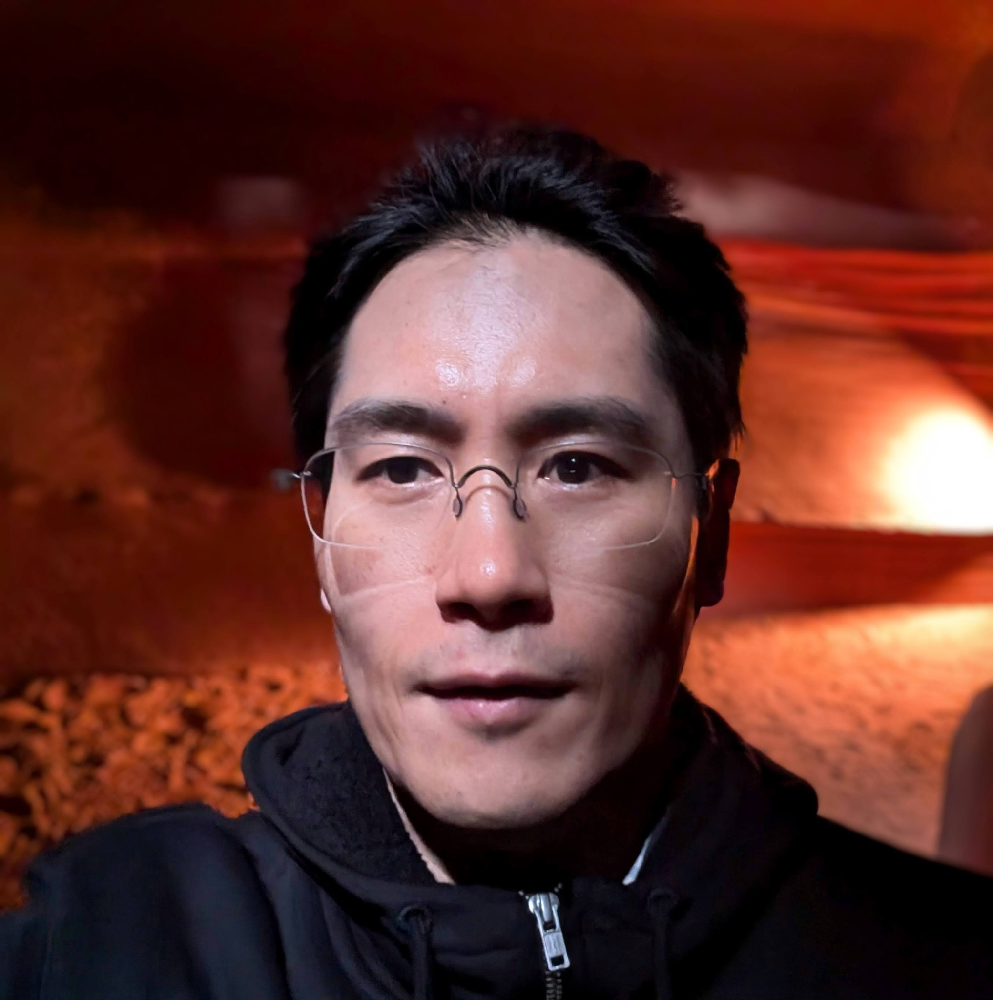

Resilient and Secure Communications
Physical-layer security, anti-jamming methods, secret sharing, robust coding, and zero-trust approaches for 5G and beyond.

Arizona State University
Associate Professor
School of Electrical, Computer and Energy Engineering
Ira A. Fulton Schools of Engineering
Goldwater Center 208, Tempe, AZ 85287
taejoonkim@asu.edu
I work at the intersection of wireless communications, statistical signal processing, machine learning, and security. My research develops theory-guided methods for resilient communication, distributed sensing and fusion, MIMO and high-frequency systems, coding, information theory, and integrated sensing and communications.
I received my Ph.D. in Electrical and Computer Engineering from Purdue University, my M.S. from KAIST, and my B.S. from Sogang University. Before joining Arizona State University in 2024, I was on the faculty at the University of Kansas and City University of Hong Kong and worked as a researcher at Nokia Bell Labs, KTH, and ETRI.
Research
Physical-layer security, anti-jamming methods, secret sharing, robust coding, and zero-trust approaches for 5G and beyond.
Distributed learning, over-the-air aggregation, compressed transmission, spectrum intelligence, and resource-aware sensor fusion.
Theory-guided learning for coding, detection, channel estimation, federated learning, and adaptive wireless systems.
Massive MIMO, cell-free architectures, hybrid precoding, beam alignment, channel estimation, and high-frequency network design.
Feedback and two-way communication, quantum LDPC decoding, approximate message passing, and short-blocklength coding.
Radar waveform and beam design, sensing parameter estimation, and spectrum-compatible joint communication and sensing.
Recognition
Publications
Publication information is drawn from the current CV. Entries are intentionally presented without paper-level links.
Teaching
Subjects and semesters are listed without course-site or syllabus links.
| Course | Subject | Semester and year |
|---|---|---|
| EEE 350 | Random Signal Analysis | Fall 2026 |
| EEE 551 | Information Theory | Spring 2026 |
| EEE 554 | Probability and Random Processes | Spring and Fall 2025 |
Group
Projects
Externally funded projects are listed from the current CV, including active and completed work.